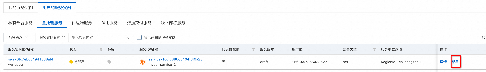
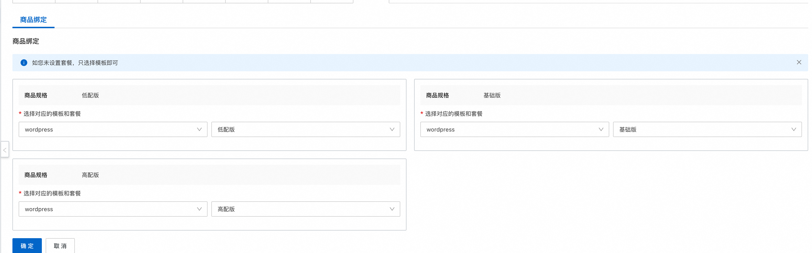
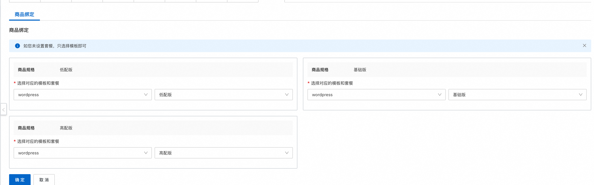
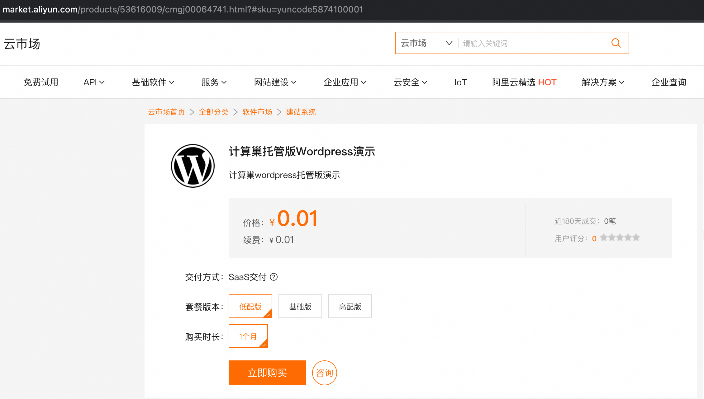
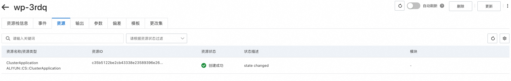
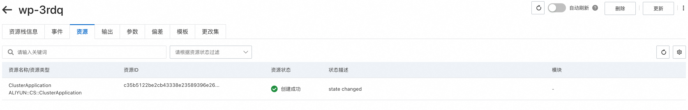

服务模板说明文档
服务说明
本文介绍容器服务部署wordpress实现托管版多租户的流程，本示例对应的Git仓库地址：wordpress-managed-ack-demo。
根据该服务模板构建的服务默认包含三种套餐：
| 套餐名 | vCPU | 内存 | 存储 | 副本数 |
|---|---|---|---|---|
| 低配版 | 300m | 512Mi | 20Gi | 1 |
| 基础版 | 600m | 1Gi | 40Gi | 2 |
| 高配版 | 1 | 2Gi | 80Gi | 3 |
本示例需要提前准备容器集群，需要到容器服务控制台 提前创建。 本示例创建过程大约持续1分钟，当服务变成待提交后构建成功。
服务架构
本部署架构为容器多租户部署，架构如下图所示： 1. 使用ingress根据域名路由到各个租户的wordpress 2. 每个租户一个k8s namespace，用namespace隔离 3. wordpress和mysql使用Helm部署 4. 这个示例中的域名采用了本地域名，需要用户手动添加本地域名和slb ip的映射。

服务构建计费说明
测试本服务构建无需任何费用，创建服务实例涉及的费用参考服务实例计费说明。
服务实例计费说明
测试本服务在计算巢上的费用主要涉及：
- 导入的容器集群的费用
- 在容器集群新建的磁盘、网络等费用
服务实例部署流程
部署参数说明
| 参数组 | 参数项 | 说明 |
|---|---|---|
| 服务实例 | 服务实例名称 | 长度不超过64个字符，必须以英文字母开头，可包含数字、英文字母、短划线（-）和下划线（_）。 |
| 地域 | 服务实例部署的地域 |
部署步骤
- 部署链接

- 单击部署链接，进入服务实例部署界面，根据界面提示，填写参数完成部署。
- 参数填写完成后可以看到对应询价明细，确认参数后点击下一步：确认订单。
- 确认订单完成后同意服务协议并点击立即创建。 进入待部署阶段。
- 在用户侧进入待部署状态后需要服务商同意用户的部署。 
- 等待部署完成后就可以开始使用服务，进入服务实例详情点击Endpoint。这里使用的是本地域名，需要在hosts中添加本地域名和slb的映射，然后使用这个域名访问服务。
售卖配置
当前服务因为没有配置售卖链路，所以用户侧部署时候需要服务商的二次确认，当服务上架到阿里云云市场后，就可以不经过服务商的二次确认就可以完成部署。
- 计算巢服务审核上线。
上到云市场的商品需要在计算巢这里完成上架过程，走通预发布和发布流程，经过审核后上线。

- 点击到云市场创建商品，选择类目SaaS服务计算巢托管版。


- 按要求添商品信息。
- 在销售信息时候选择预付费模式，并配置三个套餐，给三个套餐配置相应的价格。

- 完成商品上线和审核。

- 到计算巢完成套餐和云市场商品的绑定 (如果名字一样会自动匹配上，可以忽略这个步骤)。
 
 - 完成部署。

 


- 至此完成了一个托管版上到云市场并使用的全过程。
更多功能
计量计费
服务配置
© 2009-2022 Aliyun.com 版权所有